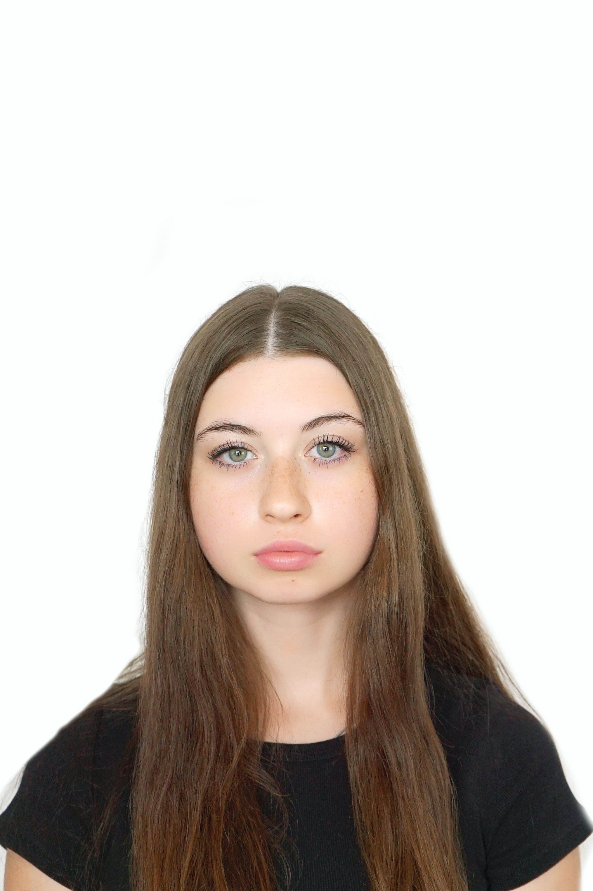

ЗВІТИ З ЛАБОРАТОРНИХ РОБІТ
З ДИСЦИПЛІНИ "ІНТЕРНЕТ-ТЕХНОЛОГІЇ ТА ПРОЕКТУВАННЯ WEB-ЗАСТОСУВАНЬ"
Студентки групи ІС-32 Лємаєвої Олександри

Лабораторна робота №1
Лабораторна робота №2
Лабораторна робота №3
Лабораторна робота №4
Лабораторна робота №5
Лабораторна робота №6
Лабораторна робота №7
Лабораторна робота №8
Лабораторна робота №9
Тема Мета
Місце розташування сайту, звіту
ЗАВДАННЯ №1
Зовнішній вигляд макету. Код макету
ЗАВДАННЯ №2
Фіксована таблична верстка
Гумова таблична верстка
Фіксована блокова верстка
Гумова блокова верстка
ЗАВДАННЯ №3 FLEXBOX
Скріншот сторінки (Flexbox)
HTML - код (Flexbox)
CSS - код (Flexbox)
ВИСНОВКИ